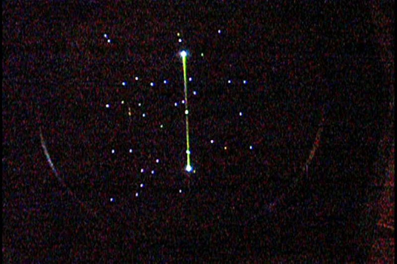
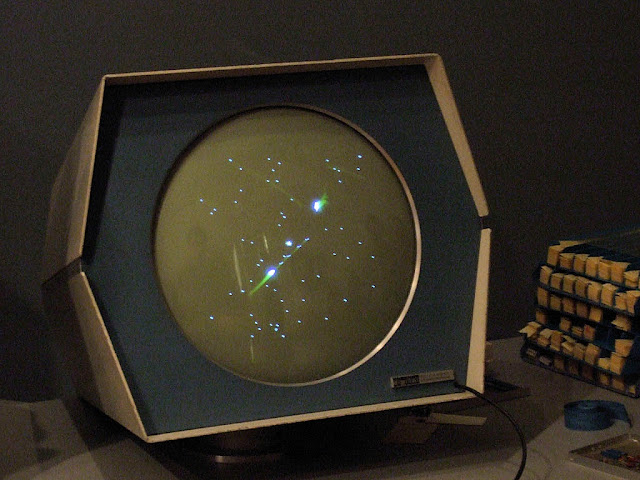
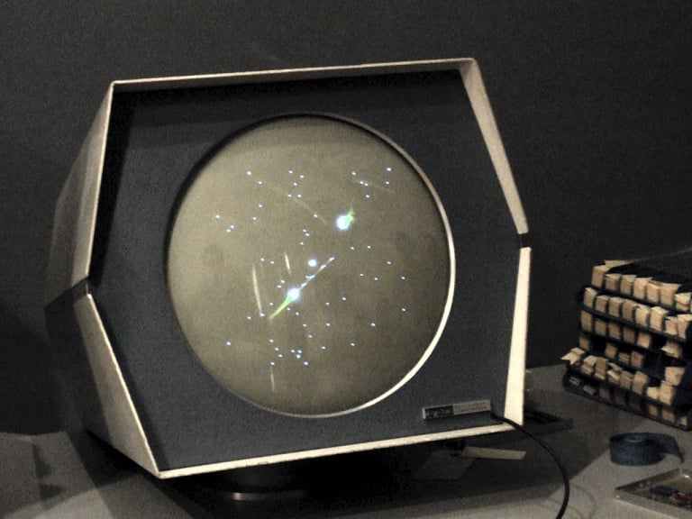
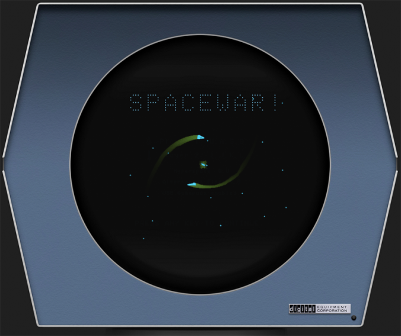

SPACEWAR!
The original space combat video game. Born at MIT in 1962 on a PDP-1 minicomputer, Spacewar! pioneered vector graphics, physics simulation, and multiplayer gaming — launching an entire industry.
Explore the Archive
Dive into every aspect of Spacewar — from its creation at MIT to its lasting impact on the video game industry, and how you can play it today.
History & Origins
The complete story of Spacewar's creation at MIT in 1961-62. Meet Steve Russell, the PDP-1, and the hackers who invented video gaming.
Read the historyGameplay Guide
Master the controls, understand gravity physics, learn torpedo tactics, and use hyperspace to outmaneuver your opponent.
Learn to playPlay Spacewar Today
Play in your browser via emulators, find modern remakes, or run it on Steam. Everything you need to experience the original.
Start playingSteam Spacewar FAQ
What is Spacewar on Steam? Why is it in your library? Is it safe? Answers about AppID 480 and the piracy controversy.
Get answersLegacy & Influence
From the 1972 Intergalactic Spacewar Olympics to Nolan Bushnell's Computer Space and the birth of Atari — how Spacewar shaped gaming.
Discover the legacyFrequently Asked Questions
Who made Spacewar? Is it really the first video game? How does gravity work? Answers to the most common questions.
Browse FAQsWhat Is Spacewar?
Spacewar! (also written as Spacewar or Space War) is a two-player space combat video game developed in 1961–1962 by Steve "Slug" Russell and a group of fellow students at the Massachusetts Institute of Technology (MIT). It was written for the Digital Equipment Corporation PDP-1 minicomputer and displayed on a vector graphics CRT monitor.
In the game, two players each pilot a spaceship — the slender "Needle" and the wedge-shaped "Wedge" — as they orbit a central star. The star's gravity pulls both ships, creating dynamic orbital mechanics. Players fire torpedoes at each other and can activate hyperspace to randomly teleport across the screen, escaping danger at the risk of exploding on re-entry.
Spacewar! is widely regarded as the first video game to achieve widespread recognition and distribution. While earlier experiments exist — including Tennis for Two (1958) and the Cathode-Ray Tube Amusement Device (1947) — Spacewar was the first to be copied, shared, and played across multiple computer labs, directly inspiring the founders of Atari and the entire arcade game industry.
💡 Key Fact
Spacewar! was created by a group of MIT students in their spare time, using a $120,000 PDP-1 computer donated to the university by DEC founder Ken Olsen. It was never sold commercially — it was shared freely among PDP-1 users, making it perhaps the first open-source video game.

Technical Specifications
========================================
SPACEWAR! — GAME SPECIFICATIONS
========================================
Title: Spacewar!
Year: 1962 (developed 1961-62)
Platform: DEC PDP-1 minicomputer
Display: Type 30 CRT, vector graphics
Resolution: 1024 × 1024 points
Memory: 9K words (18-bit each)
Language: PDP-1 assembly / macro
Players: 2 (local, split controls)
Genre: Space combat simulation
Developer: Steve Russell & MIT students
Distribution: Free, shared via paper tape
========================================
$
The Two Ships
Spacewar features two distinct player ships, each with unique handling characteristics and visual designs rendered as vector graphics on the PDP-1's CRT display.
△ The Needle
Player 1
A slender, needle-shaped spacecraft with a pointed nose and wide tail fins. The Needle is more aerodynamic in appearance and was controlled by the left player's control box. Its thin profile makes it a harder target to hit.
- Shape: Slim, pointed nose
- Controls: Left control box
- Advantage: Smaller target profile
◆ The Wedge
Player 2
A broader, wedge-shaped (triangular) spacecraft with a wider body. The Wedge is controlled by the right player and, while a larger target, offers a different visual profile that some players found easier to track during high-speed maneuvers.
- Shape: Wide triangular wedge
- Controls: Right control box
- Advantage: Easier visual tracking
Core Game Mechanics
🌠 Gravity Well
A central star exerts real gravitational pull on both ships. Mastering orbital mechanics — slingshot maneuvers, gravity assists, and avoiding collision — is essential to survival.
💣 Torpedo Combat
Each ship fires photon torpedoes that travel in straight lines (unaffected by gravity in the original). Torpedoes have limited fuel and eventually fade from the screen.
⚡ Hyperspace Jump
In desperate situations, activate hyperspace to teleport to a random location. But beware — each jump carries a risk of exploding on re-entry, making it a gamble rather than a guaranteed escape.
🔥 Thrust & Momentum
Ships have realistic inertia: thrust accelerates you, but you keep drifting until you counter-thrust. There's no friction in space — planning your trajectory is half the battle.
Brief Timeline
Game Gallery
Authentic photographs of Spacewar! running on the restored DEC PDP-1 at the Computer History Museum in Mountain View, California — the same hardware the game was originally written for in 1962.





Ready to Play?
Experience the game that started it all. Play Spacewar in your browser through a PDP-1 emulator, or find modern remakes and the Steam version. No downloads required for the browser version.